Ray tracing em estrelas relativísticas
Da geometria
à observação
Como a curvatura do espaço-tempo decide a imagem, o espectro e a curva de luz que um telescópio de raios X recebe de uma estrela de nêutrons.
Roteiro
Três partes, um caminho
I
Ray tracing relativístico
Geodésicas nulas em Schwarzschild: o desvio da luz, o redshift e os atrasos — e como seguir os raios de trás para a frente, do telescópio até a superfície.
II
Pulsares e estrelas de nêutrons
Os laboratórios: estrutura e equação de estado, pulsares e magnetares, manchas quentes, rotação, atmosferas — e o que o NICER já mediu.
III
Resultados recentes
Meus trabalhos publicados: curvas de luz de magnetares, um magnetar massivo de campo baixo, colunas de acreção — e testes de teorias alternativas da gravidade.
A premissa
Tudo o que sabemos chega em fótons
Estrelas compactas são laboratórios naturais de gravitação em campo forte — mas só as conhecemos pelos fótons que saíram delas e atravessaram um espaço-tempo curvo.
O problema direto
Dada a estrela e a métrica, prever o que se observa. É o ray tracing.
O problema inverso
Dado o que se observa, inferir massa, raio, geometria das manchas e campo magnético.
O teste
Se a métrica não for a de Schwarzschild, as curvas de luz mudam: a observação testa a gravidade.
I
Parte um
Ray tracing
relativístico
Perto de uma massa a luz não anda em linha reta: segue as geodésicas nulas da métrica. Ray tracing é seguir essas geodésicas de trás para a frente — do telescópio até a fonte.
25 de novembro de 1915
Einstein e suas equações de campo
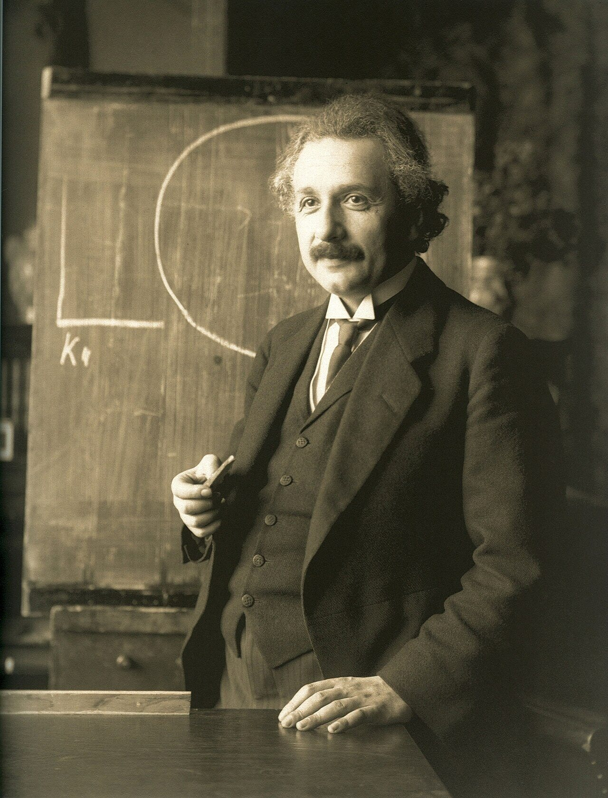
F. Schmutzer · domínio público“O espaço-tempo diz à matéria como se mover; a matéria diz ao espaço-tempo como se curvar.”
Os testes clássicos
Sobral, 1919: a luz faz curva
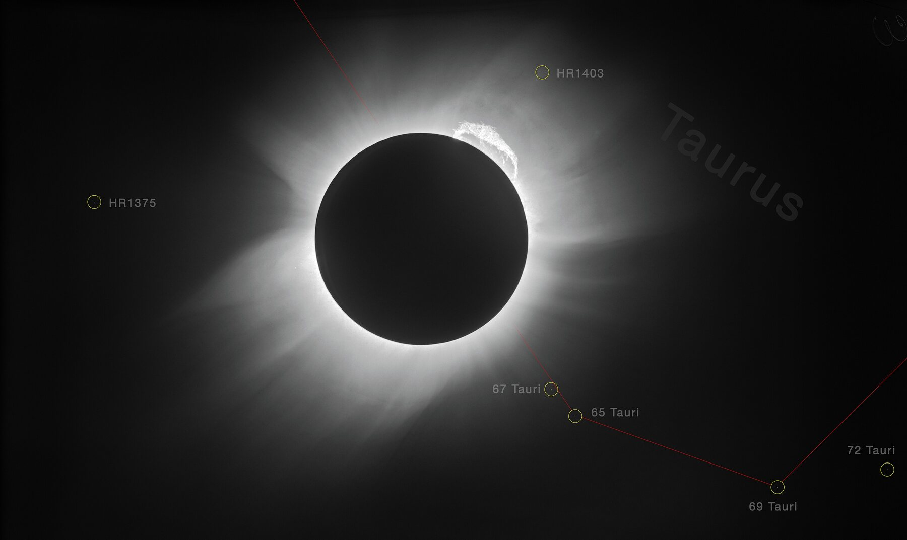
ESO / Landessternwarte Heidelberg-Königstuhl / Dyson, Eddington & Davidson · CC BY 4.0| efeito | RG prevê |
|---|---|
| periélio de Mercúrio (1915) | 43″ / século |
| desvio da luz rasante ao Sol (1919) | 1,75″ |
| desvio para o vermelho, Pound–Rebka (1959) | 2,5×10⁻¹⁵ em 22,5 m |
| atraso de Shapiro (1964) | ~200 μs |
| relógios do GPS | +38 μs / dia |
Expedição de Sobral (CE): 1,98 ± 0,12″. Príncipe: 1,61 ± 0,30″. O céu do Nordeste confirmou Einstein.
Sobral, 29 de maio de 1919 · a medida
Duas chapas, o mesmo céu
Noite: as Híades fotografadas em julho, antes do amanhecer, com o mesmo telescópio — o Sol longe dali.
Eclipse: o mesmo campo em 29 de maio, com a Lua cobrindo o Sol. Cada estrela se afasta do Sol, na direção radial.
Na chapa inteira nada se mexe: 1″ é um décimo de pixel. Nas lupas, em escala real, como no micrômetro, a estrela pula uma fração da própria largura — e o centro de uma mancha se mede bem melhor que a largura dela.
A conta de Einstein · novembro de 1915
De onde vem o 1,75″
1859 – 1915 · o periélio de Mercúrio
Mercúrio não fecha a órbita
| avanço do periélio | por século |
|---|---|
| observado (relativo às estrelas) | 574″ |
| outros planetas, por Newton | 531″ |
| sobra sem explicação | 43″ |
Le Verrier encontrou a sobra em 1859 e propôs um planeta escondido, Vulcano. Nunca foi achado. Einstein obteve os 43″ sem nenhum parâmetro ajustável.
“Por alguns dias, fiquei fora de mim de excitação alegre.”
Dezembro de 1915 · front russo
Schwarzschild e a primeira solução exata
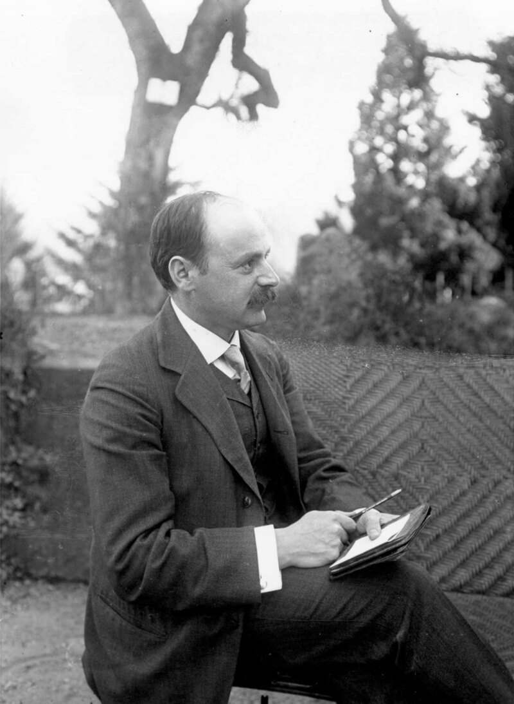
1 rs
horizonte de eventos
1,5 rs
esfera de fótons
3 rs
ISCO: última órbita estável
2,95 km
rs do Sol (Terra: 8,9 mm)
Escreveu a Einstein em 22 de dezembro de 1915, servindo como artilheiro. Morreu em maio de 1916.
O que nos interessa da métrica
A curvatura faz três coisas com um fóton
1 · Encurva o caminho
O fóton segue uma geodésica nula. Perto da superfície de uma estrela de nêutrons o desvio é de dezenas de graus: vemos mais da metade da estrela.
2 · Muda a energia
Um fóton emitido em r com energia local E chega ao infinito com
3 · Atrasa
Caminhos diferentes levam tempos diferentes (atraso de Shapiro): os fótons de cada ponto da estrela chegam com dezenas de microssegundos de diferença.
Ray tracing é juntar as três numa conta só, pixel a pixel, para cada instante da rotação.
Numa estrela de nêutrons, R ≈ 2,5–3 RS: nenhum dos três efeitos é correção pequena.
E os três dependem só da métrica fora da estrela — por isso uma curva de luz carrega informação sobre a gravidade.
Geodésicas nulas em Schwarzschild
Duas constantes e um potencial
A métrica não depende de t nem de φ: energia e momento angular se conservam.
Para a luz só importa a razão, o parâmetro de impacto b = L/E:
O máximo de V fica em r = 1,5 RS: a esfera de fótons. Abaixo de bc = (3√3/2) RS o raio vem do horizonte — ou da estrela.
Geodésicas de Schwarzschild
Como a luz se curva
- b > 3√3 GM/c² ≈ 2,6 RS: a luz é desviada e escapa.
- b = 2,6 RS: órbita instável na esfera de fótons, r = 1,5 RS.
- b < 2,6 RS: capturada.
O termo à direita é a correção da Relatividade Geral. Sem ele, a luz andaria em linha reta.
Event Horizon Telescope · 2019 e 2022
As sombras
 M87* · 2019 · 6,5 bilhões de M☉ · 55 milhões de anos-luzEHT Collaboration · CC BY 4.0
M87* · 2019 · 6,5 bilhões de M☉ · 55 milhões de anos-luzEHT Collaboration · CC BY 4.0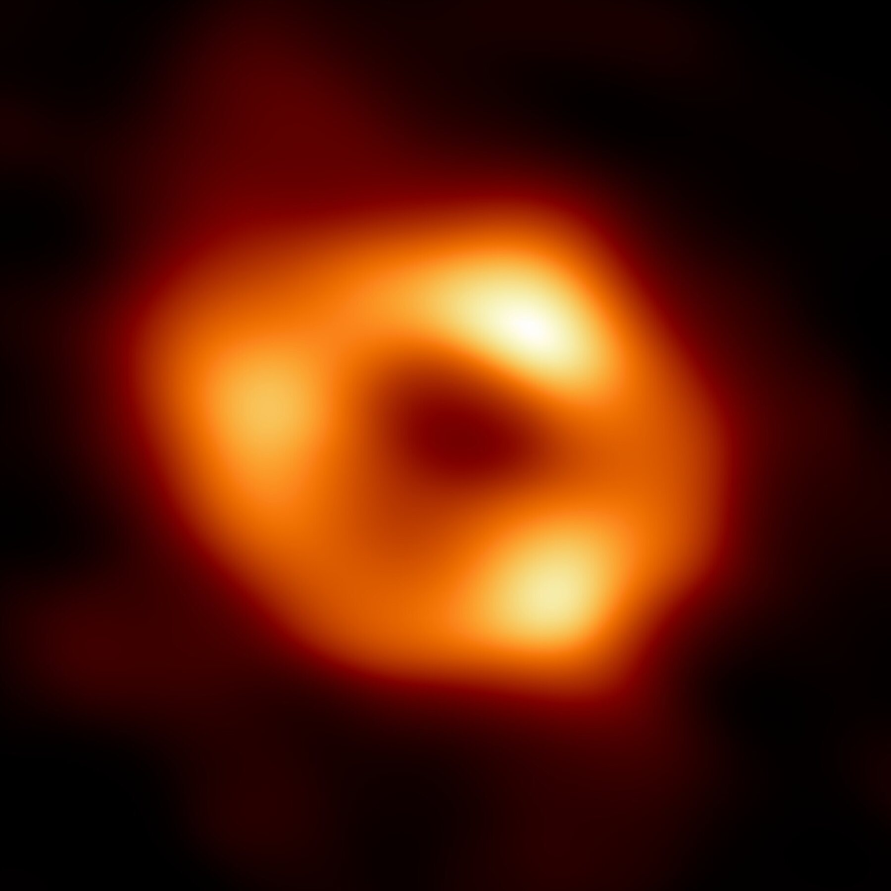
Sgr A* · 2022 · 4,3 milhões de M☉ · 27 mil anos-luzEHT Collaboration · CC BY 4.0O anel tem ~5 RS de diâmetro: é a esfera de fótons, a 1,5 RS, vista através da lente do próprio buraco negro — diâmetro da sombra = 2√27 GM/c² ≈ 5,2 RS.
Compacidade
Onde a RG deixa de ser correção
Superfície comparada ao infinito: z = (1 − rs/R)−1/2 − 1, g = (GM/R²)(1 − rs/R)−1/2 · desvio pela integral exata da órbita (campo fraco: 2rs/R) · ISCO, esfera de fótons e horizonte: uma estrela de 1,4 M☉ desse tamanho · os objetos passam sozinhos até o primeiro clique.
O ângulo que importa
Da superfície ao infinito: ψ(α)
Um fóton sai da superfície com ângulo α em relação à normal. Ao chegar ao observador, terá girado ψ em torno do centro:
Sem gravidade, ψ = α e o limbo está em 90°. Com gravidade, o limbo vai além: vemos atrás da estrela. A aproximação é ótima até R ≈ 3 RS e falha justamente onde aparece a imagem secundária.
A ideia ingênua: da estrela para a câmera
Muitos raios, quase nenhum pixel
- Cada ponto da superfície emite em todas as direções; segue-se cada raio pela geodésica, para fora.
- Só os que passam pela abertura da câmera viram pixel: aqui, 2 em cada 10 000.
- Para completar esta imagem seriam ~10⁸ raios: horas de conta.
- Com um telescópio de verdade, 1 m² a 1 kpc, chega 1 fóton em cada 10⁴⁰.
Contagem em 3D: ponto uniforme na superfície, direção isotrópica para fora, geodésica exata até a câmera, a 13 RS. Desenhada, só uma amostra no plano; os raios que entram na câmera aparecem todos.
O método: da câmera para a estrela
Um pixel, um raio
- Os raios saem da câmera, um por pixel: o caminho da luz percorrido ao contrário. A direção do pixel dá o parâmetro de impacto b.
- Integra-se a geodésica até o raio escapar para o céu ou acertar a superfície num ponto, com um ângulo α.
- A cor do pixel é a do ponto de onde a luz saiu — corrigida por redshift e pelo ângulo de emissão.
- Todo raio calculado vira pixel: 3 136 raios, 3 136 pixels, contra os 10⁸ do slide anterior.
Na simetria esférica, ψ depende só de b: basta uma tabela ψ(b), calculada uma vez, para todos os pixels. Cada raio é girado para o plano do desenho.
A aparência de uma estrela compacta
Vemos atrás da estrela
À esquerda, a estrela como seria sem gravidade; à direita, ray-traced. A grade é a mesma; a gravidade dobra a luz em volta da estrela e mostra o hemisfério de trás.
- A imagem é maior: raio aparente R/√(1 − RS/R).
- Para R < 1,76 RS a superfície inteira aparece — o polo de trás vira um anel.
- Abaixo de 1,5 RS a estrela estaria dentro da esfera de fótons.
1959 · Pound & Rebka · torre Jefferson, Harvard
A luz perde energia ao subir
Raios γ de 14,4 keV do ⁵⁷Fe (efeito Mössbauer). Pound & Rebka, PRL 4, 337 (1960): ~10%; Pound & Snider, Phys. Rev. 140, B788 (1965): ~1%. A cada 12 s fonte e absorvedor trocam de lugar, como no experimento.
Liouville · o que chega ao telescópio
O espectro que sai do poço
Ao longo de um raio, Iν/ν³ se conserva. Com g = √(1 − RS/R):
Um corpo negro continua corpo negro, mais frio. A luminosidade vista de longe é L∞ = g² L.
Uma linha espectral de energia conhecida E0 chega em g E0: medir a linha é medir a compacidade.
Resumo da Parte I
A receita do ray tracing
- Escolha a métrica exterior: Schwarzschild; Hartle–Thorne ou Kerr com rotação; outra, se a teoria da gravidade for outra.
- Monte a tabela ψ(b) e o atraso Δt(b) integrando as geodésicas nulas uma vez.
- Para cada pixel (ou cada elemento da superfície): b → ponto emissor, ângulo α, redshift g, atraso.
- Intensidade: Iobs = g³ I(E/g, α′), com o feixe da atmosfera e o Doppler da rotação.
- Some: imagem, fluxo — e, fase a fase, a curva de luz e o espectro resolvido em fase.
Exato ou aproximado?
- Integral exata (ou integrais elípticas): sempre vale, inclusive com imagens secundárias.
- Beloborodov (2002) e Poutanen & Beloborodov (2006): fórmulas fechadas para ψ e para o atraso, ótimas para R ≳ 3 RS.
- Oblate Schwarzschild (Morsink et al. 2007): estrela achatada pela rotação, para pulsares de milissegundo.
É esse o motor por trás das medidas de massa e raio do NICER — e dos resultados da Parte III.
II
Parte dois
Pulsares e
estrelas de nêutrons
Os laboratórios: mais compactos que qualquer coisa que não seja um buraco negro, girando, magnetizados — e com a superfície visível em raios X.
Estrelas de nêutrons em números
Uma massa solar numa cidade
 NASA's Goddard Space Flight Center · domínio público
NASA's Goddard Space Flight Center · domínio público1,1–2,1 M☉
massas medidas
11–13 km
raio (NICER, ondas gravitacionais)
2–3 RS
compacidade: o regime da Parte I
10⁸–10¹⁵ G
campo magnético na superfície
Densidade central de algumas vezes a do núcleo atômico, ~10¹⁵ g/cm³. Períodos de rotação de 1,4 ms a dezenas de segundos.
A gravidade na superfície é ~10¹¹ vezes a da Terra; a velocidade de escape, de 0,5 a 0,7 c.
Tolman–Oppenheimer–Volkoff · equação de estado
Da física nuclear à curva M–R
Cada equação de estado P(ε) dá uma curva massa–raio e uma massa máxima. Medir massa e raio da mesma estrela escolhe entre elas.
As retas de compacidade constante ligam a curva à Parte I: em R = 1,76 RS a superfície inteira ficaria visível; em 1,5 RS, a esfera de fótons.
Polítropos por partes de Read, Lackey, Owen & Friedman (2009); vínculos (68%): NICER — Riley et al. 2019, 2021; Miller et al. 2019; Choudhury et al. 2024; PSR J0348+0432 (Antoniadis et al. 2013); GW170817 (Abbott et al. 2018).
Cambridge · 28 de novembro de 1967
O primeiro pulsar: “LGM-1”
 Roger W Haworth · CC BY-SA 2.0
Roger W Haworth · CC BY-SA 2.0 W. T. Sullivan III / NRAO/AUI · CC BY 4.0
W. T. Sullivan III / NRAO/AUI · CC BY 4.0 Bill Thompson · CC BY-SA 4.0
Bill Thompson · CC BY-SA 4.0Bell notou um “ruído” que voltava no registro em papel do radiotelescópio: pulsos a cada 1,337 s, regulares como um relógio. Apelido: LGM-1, de Little Green Men — homenzinhos verdes. Era uma estrela de nêutrons girando.
Teoria do pulsar
O que se mede, e o que se deduz
| observável | expressão |
|---|---|
| período | P |
| idade característica | tc = P/2Ṗ |
| campo magnético | B = (3Ic³PṖ/8π²R⁶)1/2 |
| energia de rotação perdida | Ėrot = −4π²IṖ/P³ |
Estrela de nêutrons canônica
M = 1,4 M☉ · R = 10 km · I = 10⁴⁵ g cm²
B = 3,2×10¹⁹ (PṖ)1/2 G
|Ėrot| = 3,9×10⁴⁶ Ṗ/P³ erg/s
Só se mede P e Ṗ. O resto vem de supor um dipolo magnético girando — as retas do diagrama.
Atividades transientes
Um magnetar, girando
| evento | energia |
|---|---|
| surtos curtos (~0,1 s) | 10³⁹ – 10⁴¹ erg |
| outbursts (meses) | 10⁴¹ – 10⁴³ erg |
| flares gigantes | 10⁴⁴ – 10⁴⁶ erg |
As linhas de campo, ancoradas na crosta, se torcem com o tempo. Quando a crosta não aguenta a tensão, ela racha — um estrelamoto — e a energia magnética sai de uma vez.
Flares gigantes na Galáxia e nas Nuvens de Magalhães: 1979, 1998 e 2004.
A superfície em raios X
Por que aparecem manchas quentes
Pulsares de milissegundo
Partículas aceleradas na magnetosfera voltam e aquecem as calotas polares a ~10⁶ K. São os alvos do NICER.
Magnetares
O decaimento do campo e as correntes nas linhas torcidas aquecem regiões da crosta — que mudam depois de cada outburst.
Estrelas isoladas que esfriam
O campo magnético torna a condução de calor anisotrópica: polos mais quentes que o equador (as “Sete Magníficas”).
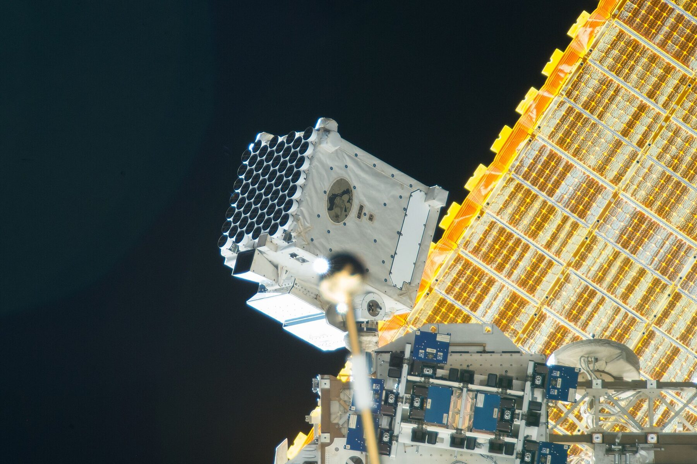
NASA · domínio público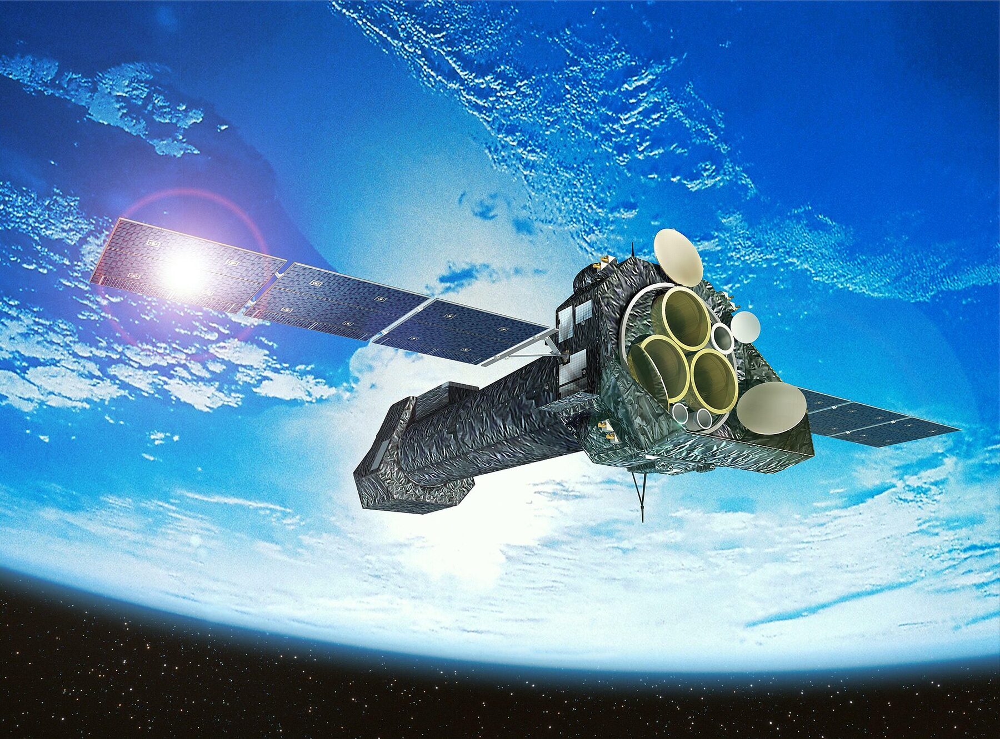
ESA/XMM-Newton · CC BY-SA 3.0 IGO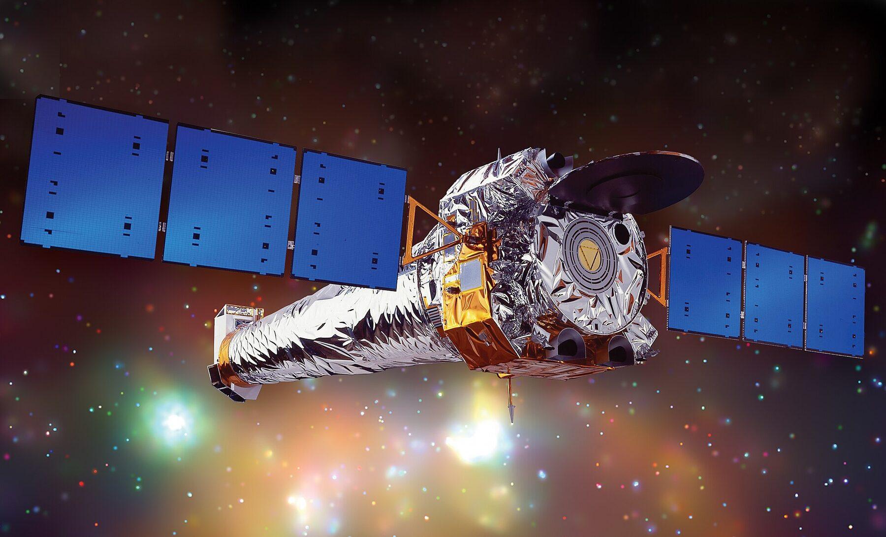
NASA/CXC/NGST · domínio públicoRay tracing de uma mancha quente
Uma mancha, uma curva de luz
Duas manchas · as classes de Beloborodov
Antípodas, ou não
Rotação e atmosfera
Doppler, aberração, atrasos e o feixe
- Doppler: a superfície anda a até 0,1–0,2 c; o lado que se aproxima brilha mais (fluxo bolométrico ∝ δ⁵).
- Aberração: o ângulo de emissão muda no referencial da superfície.
- Atrasos: dezenas de μs entre os pontos da estrela — frações do período a centenas de Hz.
- Feixe: uma atmosfera não emite igual em todas as direções; o perfil depende disso.
Juntos, deixam o pulso assimétrico e criam harmônicos — e a assimetria mede R separado de M.
NICER · modelagem de perfis de pulso
Massa e raio pela forma do pulso
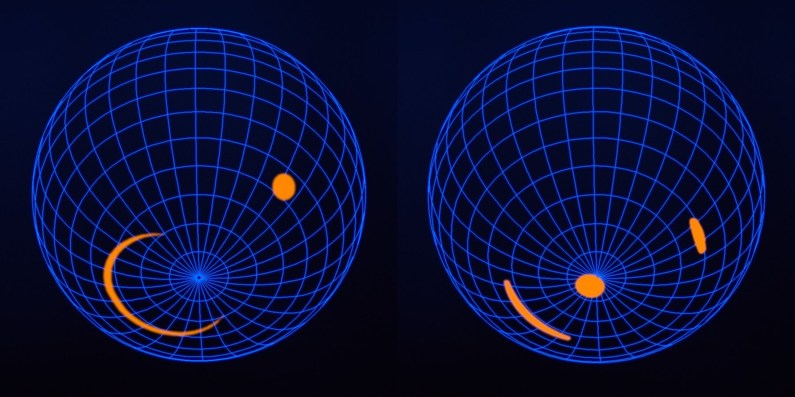
NASA/GSFC · domínio público| pulsar | massa (M☉) | raio (km) |
|---|---|---|
| PSR J0030+0451 · Riley+ 2019 | 1,34+0,15−0,16 | 12,7+1,1−1,2 |
| PSR J0030+0451 · Miller+ 2019 | 1,44+0,15−0,14 | 13,0+1,2−1,1 |
| PSR J0740+6620 · Riley+ 2021 | 2,07+0,07−0,07 | 12,4+1,3−1,0 |
| PSR J0437−4715 · Choudhury+ 2024 | 1,42 ± 0,04 | 11,4+1,0−0,6 |
O NICER marca o tempo de chegada de cada fóton com ~100 ns. Dobrando milhões de fótons no período, sai o perfil do pulso; o ray tracing, com M, R, a geometria e as manchas livres, ajusta esse perfil por inferência bayesiana.
As manchas de J0030 saíram não antípodas e alongadas: o campo não é um dipolo centrado.
III
Parte três
Resultados
recentes
Ray tracing aplicado a dados reais — magnetares, um magnetar massivo, colunas de acreção — e a mesma ferramenta usada para testar a gravidade além de Einstein.
2017 – 2026
Curvas de luz como instrumento
2017
A&A 599, A87: SGRs e AXPs movidos a rotação, com estrelas de nêutrons realistas
2020
ApJ 889, 165: SGR J1745−2900 e um campo multipolar, pela curva de luz
2023
Galaxies 11, 18: perfis de pulso de colunas de acreção
2024
JHEAp 42, 52: 3XMM J1852+0033, um magnetar massivo de campo baixo
2024
EPJC 84, 1337: curvas de luz como teste de gravidade escalar-tensorial
2024
PRD 110, 103014: rotação estratificada e o momento de inércia
2025
PRD 112, 083010: estrelas de quarks e a equação de estado da QCD
2026
arXiv:2607.09836: estrelas compactas num braneworld de tensão alta
2026
JHEAp (submetido): a coluna de 1A 0535+262 pelo espectro do NuSTAR
O fio comum: ler na luz de uma estrela compacta a sua massa, o seu raio, o seu campo — e a gravidade que a curva.
de Lima, Coelho, Pereira, Rodrigues & Rueda · ApJ 889, 165 (2020)
SGR J1745−2900: mais de duas manchas
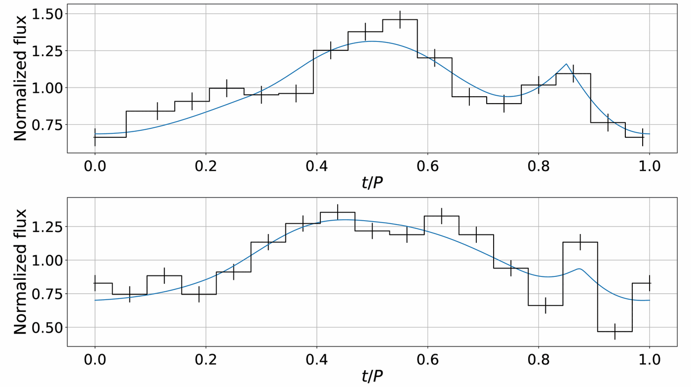
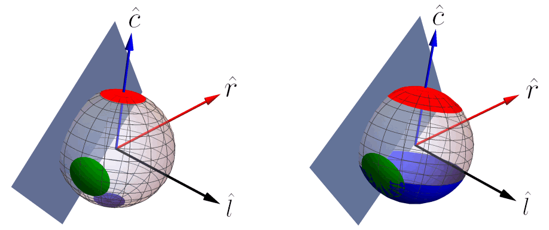
- O magnetar a 0,1 pc de Sgr A*; 3,5 anos de dados do Chandra.
- Modelo: M, R, até três manchas de qualquer tamanho e posição, desvio da luz em Schwarzschild; ajuste por algoritmo genético.
- Duas ou três manchas descrevem os dados; com três, elas são grandes (16–67°).
- Um campo com estrutura poloidal e toroidal não trivial — o mesmo recado do NICER para J0030.
1,4 ± 0,1
M☉
10,9 ± 1,5
km
de Lima et al. · JHEAp 42, 52 (2024) · 1/2
3XMM J1852+0033: ray tracing e inferência
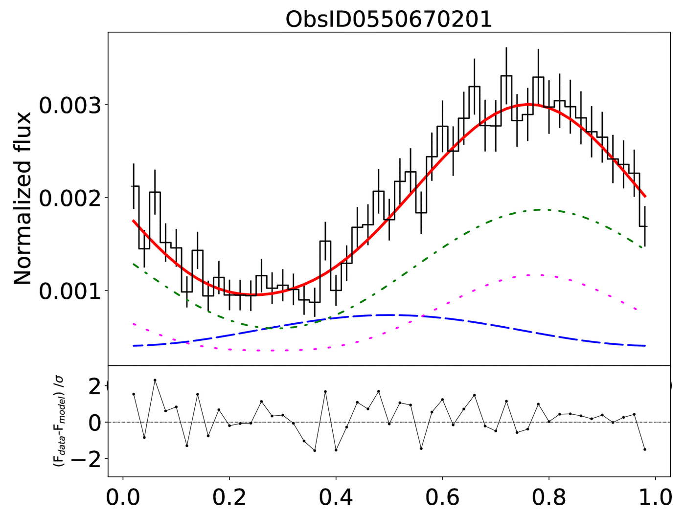
- Um magnetar transiente perto do remanescente Kes 79, P = 11,56 s; até aqui só havia limites superiores para o campo.
- Cinco épocas do XMM-Newton em três semanas de 2008.
- Ray tracing em Schwarzschild com manchas circulares de tamanho qualquer (Turolla & Nobili 2013) e atmosferas magnetizadas (NSMAX: H, C, O), com emissão anisotrópica.
- Inferência bayesiana (MCMC): massa, raio, campo e posição das manchas comuns às épocas; tamanho e temperatura variando.
- Testado com injeção e recuperação de dados simulados.
Melhor modelo
Três manchas pequenas, duas no hemisfério sul, e atmosfera de carbono: χ²/gl = 1,22, muito à frente de duas manchas ou de hidrogênio.
de Lima et al. · JHEAp 42, 52 (2024) · 2/2
Um magnetar massivo, de campo baixo
2,09+0,16−0,09 M☉
massa (1σ): entre as maiores já estimadas
12,0 ± 1,4 km
raio (2σ)
~8×10¹¹ G
campo na superfície: log B = 11,89+0,19−0,93, abaixo do crítico
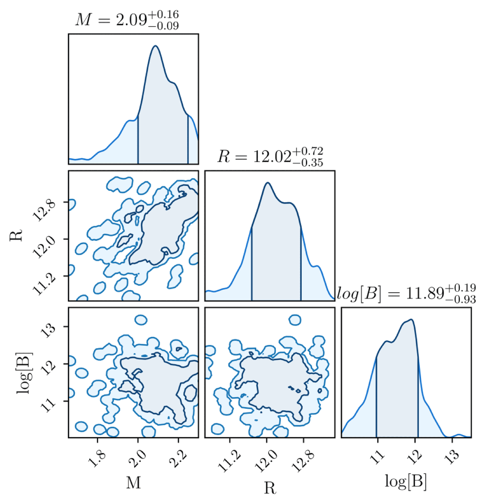
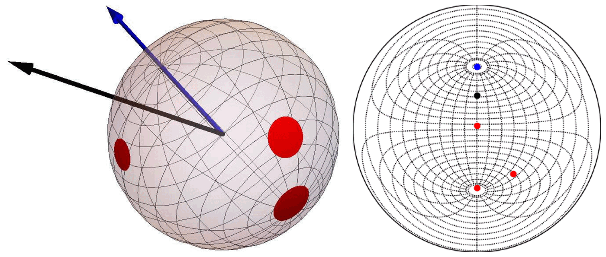
Leitura: acreção de material da supernova enterrou o campo, que está reemergindo; a atmosfera de carbono viria da queima nuclear difusiva de H/He.
Compacidade GM/Rc² ≈ 0,26: favorece equações de estado de rigidez intermediária.
Silva, de Lima, Coelho, Stecchini, de Liz & de Araujo · Galaxies 11, 18 (2023)
Quando a luz sai de uma coluna
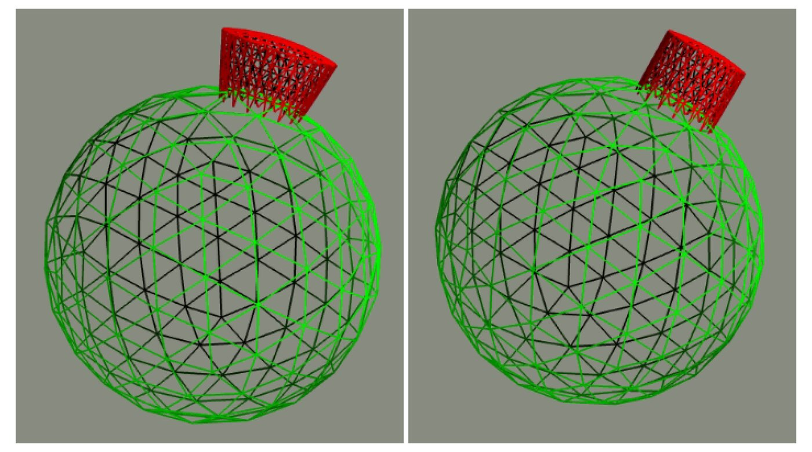
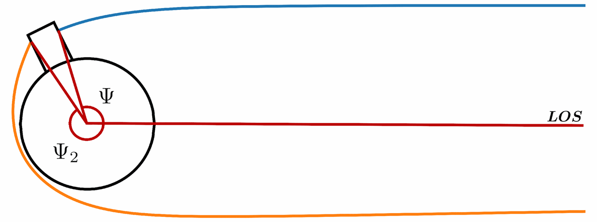
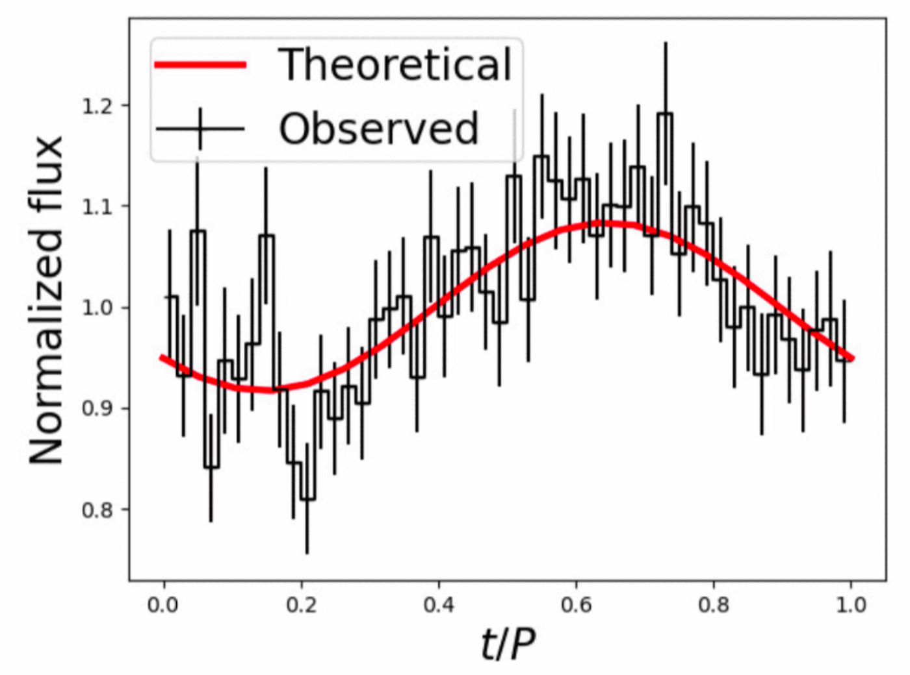
- Em binárias de raios X, a matéria cai pelas linhas de campo e forma colunas sobre os polos: a emissão sai pelos lados (feixe em leque).
- Ray tracing exato em Schwarzschild, inclusive para pontos acima da superfície, em tabela; Doppler incluído.
- Algoritmo genético para os priores, depois MCMC.
1,53+0,52−0,40
M☉
12,1+1,1−0,9
km
Silva, de Lima, Coelho & de Araújo · submetido ao JHEAp (2026) · o modelo
Dentro da coluna, pelo espectro
- A mesma estrela do slide anterior, agora pelo espectro: NuSTAR, 3–44 keV, L ≈ 3,7×10³⁶ erg/s — 16 vezes abaixo da luminosidade crítica.
- Modelo de Becker & Wolff (2022): coluna cônica; os fótons ganham energia nos elétrons quentes e no gás que cai (Comptonização térmica e de bulk) e escapam pelas paredes.
- 12 parâmetros, 4 cadeias de MCMC independentes de 256 walkers. O posterior tem dois modos; o dominante vence por Δln 𝒫 ≈ 55.
Silva, de Lima, Coelho & de Araújo · submetido ao JHEAp (2026) · a companheira
Uma estrela Be: um disco no equador
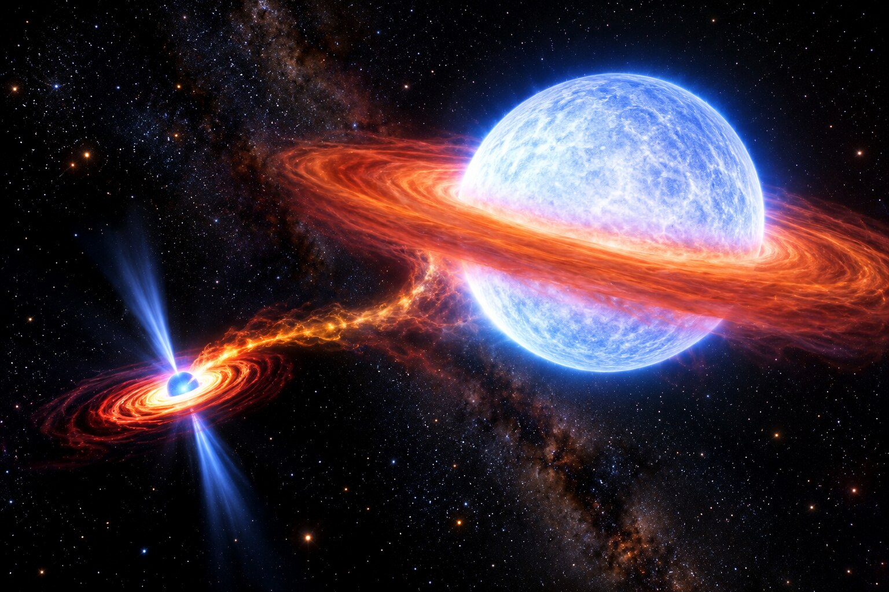
ilustração gerada por IA- Estrelas Be: quentes, dos tipos B e O tardio, giram perto do limite de rompimento e perdem gás pelo equador, formando um disco.
- O “e” de O9.7–B0 IIIe são as linhas de emissão do hidrogênio, como Hα, que vêm do disco; o perfil de dois picos mostra que ele gira.
- Em 1A 0535+262 a companheira é a estrela de nêutrons, numa órbita de 111 dias que passa pela borda do disco — o próximo slide.
Silva, de Lima, Coelho & de Araújo · submetido ao JHEAp (2026) · o sistema
De onde vem o gás da coluna
- 1A 0535+262: uma estrela de nêutrons que pulsa a cada 103 s, com B ≈ 5×10¹² G, em órbita excêntrica — e ≈ 0,45, 111 dias — em torno de HD 245770, uma estrela Be (O9.7–B0 IIIe), a 1,8 kpc.
- A estrela Be gira rápido e solta um disco de gás pelo equador.
- No periastro a estrela de nêutrons passa pela borda do disco e rouba gás: uma explosão em raios X a cada órbita.
- Perto dela, o campo corta o disco no raio magnetosférico e leva o gás até os polos: as colunas.
Em 2020, uma explosão gigante chegou a 1,2×10³⁸ erg/s; em quiescência, ~7×10³⁴ erg/s. A órbita tem a excentricidade e o período do sistema; as estrelas, o disco e o detalhe são esquemáticos.
Silva, de Lima, Coelho & de Araújo · submetido ao JHEAp (2026) · o modelo de Becker & Wolff
Uma equação para os fótons da coluna
advecção
o gás que cai arrasta os fótons, com o v(y) do slide anterior
Comptonização de bulk
o fluxo converge: espalhando no gás que cai, os fótons ganham energia
difusão
os fótons andam ao longo da coluna, com a seção de choque σ∥ do campo forte
Comptonização térmica
o termo de Kompaneets: elétrons a Te levam o espectro para ~kTe
escape
os fótons saem pelas paredes num tempo tesc: o feixe em leque
fontes
fótons-semente: bremsstrahlung, cíclotron e corpo negro da base
Como se resolve
Separação de variáveis: autofunções gn(τ) na profundidade óptica e funções de Whittaker na energia. O espectro é essa função de Green convoluída com as fontes, somando parede e topo da coluna. Seções de choque magnéticas com polarização do vácuo; linhas de cíclotron e do ferro, empíricas. A implementação foi conferida equação por equação.
O que o MCMC amostra: 12 parâmetros
Fixos: M = 1,4 M☉, R★ = 10 km, NH e a linha de cíclotron, fora da banda. B tem prior pela linha (46,3 keV). A verossimilhança é gaussiana, com a sistemática fsys, e cobra o orçamento Lacc = GMṀ/R★ dentro de um fator 2.
Silva, de Lima, Coelho & de Araújo · submetido ao JHEAp (2026) · resultados
Uma coluna quente e alta — e uma peça faltando
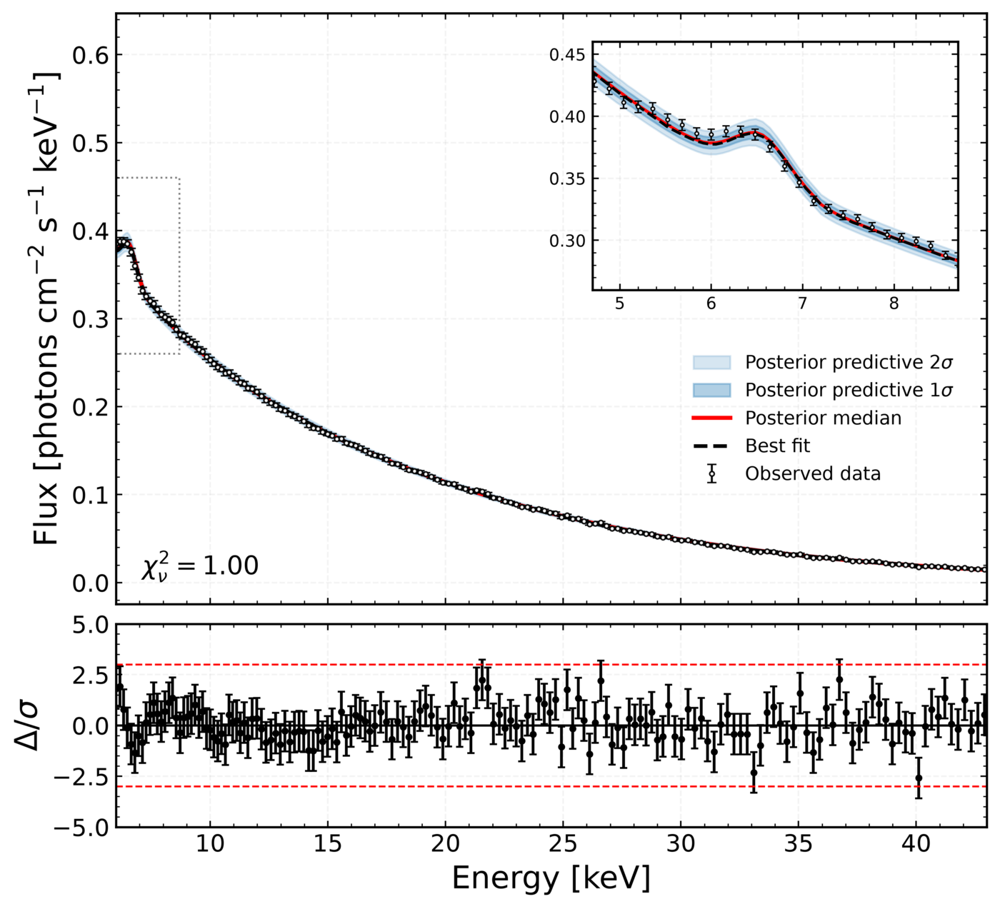
8,56×10⁷ K
temperatura dos elétrons, a 1% · kT ≈ 7,4 keV
4,5 R★
topo da coluna, ~35 km acima da superfície
0,070
ψ, bulk/térmica: a Comptonização térmica domina
log θ0 − 1,36 log Ṁ
= −22,32 ± 0,10
o espectro fixa a combinação: mais Ṁ, coluna mais larga
Uma peça faltando
O campo sai 2,3σ acima do da linha de cíclotron — que ficaria em 55 keV, não nos 46 medidos — e os resíduos andam juntos (teste de corridas: z = −3,7). Candidata: recombinação entre níveis de Landau excitados, vista nesta fonte e ausente do modelo.
Modo dominante do posterior. χ²ν = 1,00 com a incerteza sistemática livre não é teste de ajuste: o diagnóstico são os resíduos.
Brans & Dicke 1961 · Damour & Esposito-Farèse 1993
E se a gravidade não for a de Einstein?
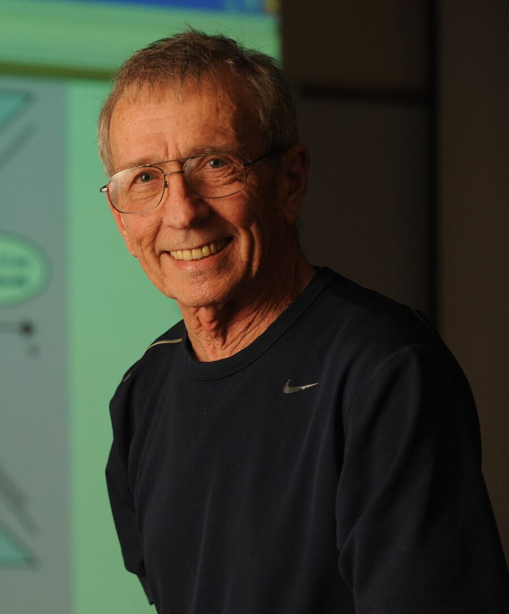
Cfbolner (Wikimedia Commons) · CC BY-SA 4.0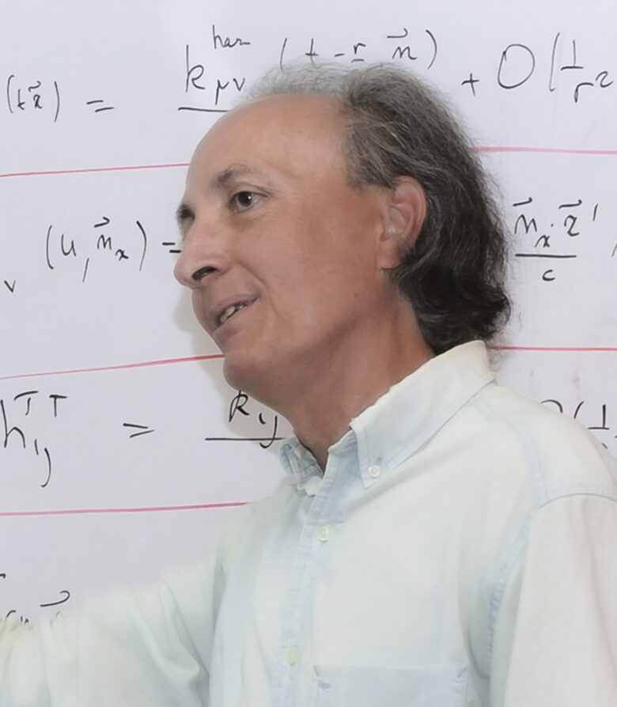
Melirius (Wikimedia Commons) · CC BY 3.0O que é “acoplar-se à matéria”
A matéria mede distâncias e tempos com g̃: as suas réguas e relógios mudam com φ. A luz não percebe — uma troca conforme não muda as geodésicas nulas —, mas o raio que a matéria mede é R = AsRE.
A matéria é fonte do campo, □φ = −4πGαT, e sente uma força a mais, ∝ α∇φ: entre dois corpos, Gef = G(1 + α²).
Nas teorias escalar-tensoriais, além da métrica há um campo escalar φ que se acopla à matéria. No Sistema Solar o acoplamento é minúsculo (α² < 10⁻⁵, pela sonda Cassini); numa estrela de nêutrons pode ocorrer escalarização espontânea: com A = eβφ²/2 e β ≲ −4,35, φ = 0 fica instável e o campo cresce sozinho, como uma magnetização espontânea.
Fora da estrela, a métrica deixa de ser a de Schwarzschild: é a métrica de Just, com uma carga escalar Q:
Duas estrelas com a mesma massa e o mesmo raio — “doppelgängers” — curvam a luz de maneiras diferentes. A curva de luz pode separar as teorias.
Ottoni, Coelho, de Lima, Pereira & Rueda · EPJC 84, 1337 (2024)
A mesma estrela, outra gravidade
Ottoni et al. · EPJC 84, 1337 (2024) · resultados
Até 80% de diferença no fluxo
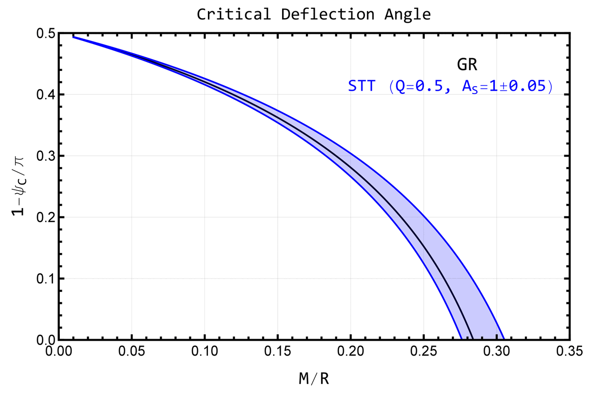
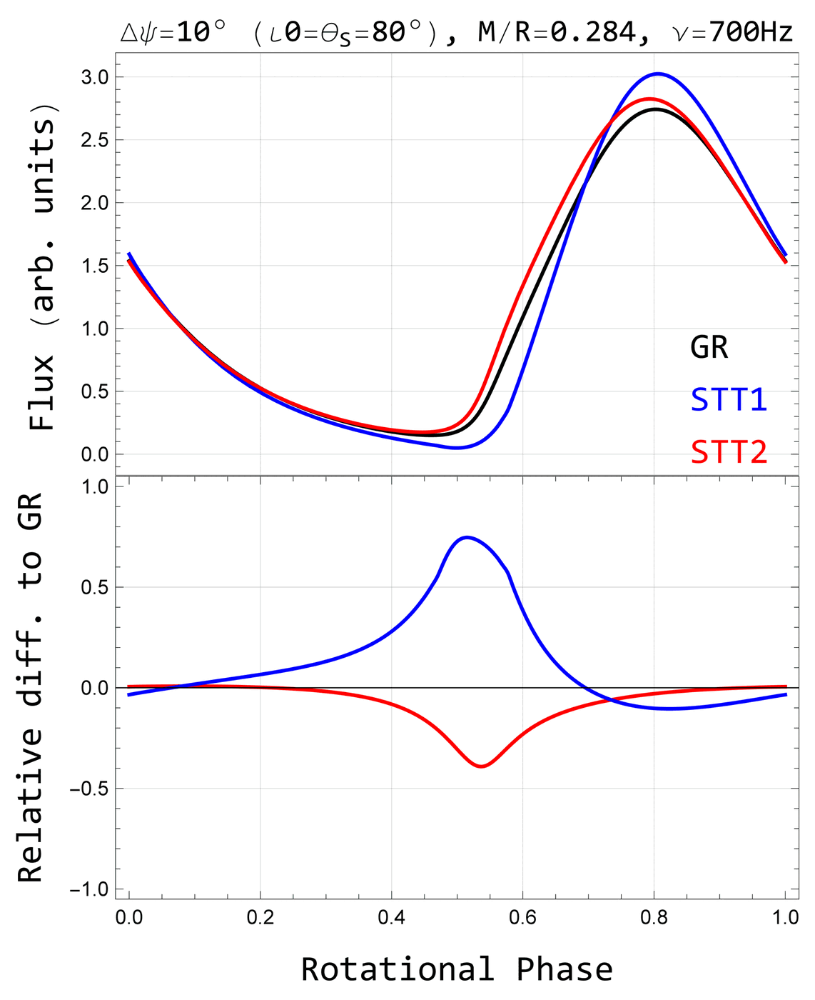
- A compacidade em que ψc = π vai de 0,275 a 0,305 na teoria escalar-tensorial, contra 0,284 na RG.
- O fluxo de uma mancha difere da RG em até ~80%.
- O raio muda até ~10% para os mesmos parâmetros da estrela: hoje, isso limita Q ≲ 0,5.
- Com o NICER, J0740+6620 tem C = 0,21–0,28: ainda não separa as teorias.
Perspectiva
Raios com incerteza menor — eXTP, NewAthena, e as ondas gravitacionais de Einstein Telescope e LISA — podem limitar as teorias escalar-tensoriais pela forma do pulso.
Randall & Sundrum 1999 · Shiromizu, Maeda & Sasaki 2000
O Universo numa membrana
No braneworld, o nosso Universo é uma hipersuperfície de quatro dimensões — a brana — dentro de um espaço com uma dimensão a mais, o bulk. Matéria e luz ficam presas na brana; só a gravidade se propaga no bulk.
A ideia aparece para atacar o problema da hierarquia (por que a gravidade é tão fraca) e o da constante cosmológica e da expansão acelerada.
- Sμν: correções locais, quadráticas na matéria (∝ T²). Num fluido, somam ρ²/2λ à densidade: pesam quando ρ se aproxima da tensão da brana λ.
- Eμν: o tensor de Weyl do bulk projetado na brana — não local: não se calcula só com o que existe na brana.
- Para λ → ∞ e Eμν → 0, volta a Relatividade Geral.
No artigo: um fechamento efetivo em 4D, inspirado no cenário de Sahni–Shtanov (2003) — não uma solução completa do bulk em 5D.
As equações TOV modificadas · equação de estado SLy
Mesma física nuclear, outra gravitação
A equação de estado da matéria (SLy) não muda. Muda o quanto ela gravita: a estrela passa a sentir uma densidade e uma pressão efetivas.
pef = p + pρλ + ρ²2λ + p𝒰termo local (λ) · setor de Weyl (𝒰)
dpdr = −(ρ + p) m + 4πr³pefr(r − 2m)a matéria se conserva: o fator (ρ + p) é o de sempre
O termo local aumenta a atração e encolhe a estrela — mas só quando ρ se aproxima de λ. No centro de uma estrela de nêutrons ρ ≈ 2×10⁻³ km⁻²; com λ ~ 10⁴ km⁻², ρ/λ ~ 10⁻⁷.
O que vem do bulk
O setor de Weyl: blindagem ou atração extra
Eμν é a marca do campo gravitacional do bulk na brana. Ali ele age como um fluido efetivo — em cosmologia, a “radiação escura”. Só que a brana não determina esse fluido: é preciso um fechamento.
Fechamento isotrópico; a tensão anisotrópica do Weyl (Δ𝒰) fica para trabalhos futuros.
| se… | efeito na estrela |
|---|---|
| α𝒰 < 0 | ρef = ρ(1 + α𝒰) < ρ: blindagem — menos massa gravitando, estrelas maiores e mais pesadas |
| α𝒰 > 0 | mais atração: estrelas menores e mais leves |
| w𝒰 | só aparece como w𝒰α𝒰ρ na pressão efetiva: pesa pouco quando α𝒰 é pequeno, e pode compensar α𝒰 |
dos Santos Júnior, de Lima & Moraes · arXiv:2607.09836 (2026, submetido) · resultados
Tensão alta, Weyl levemente negativo
Dados e inferência
GW170817 (raios da deformabilidade de maré) + NICER: PSR J0740+6620 e PSR J1231−1411 — os dois, resultados de ray tracing de perfis de pulso. MCMC de ensemble (4 × 32 caminhantes × 3 000 passos, 288 000 amostras), priores centrados em λ grande e nos valores da RG.
| mediana | 68% | RG | |
|---|---|---|---|
| log10(λ/km⁻²) | 3,98 | 2,54 – 5,50 | ∞ |
| α𝒰 | −0,15 | −0,23 – 0,15 | 0 |
| w𝒰 | 0,24 | −0,78 – 0,61 | 0 |
| Mmáx (M☉) | 2,30 | 2,22 – 2,44 | 2,05 |
| R1,4 (km) | 13,31 | 12,74 – 13,85 | 11,76 |
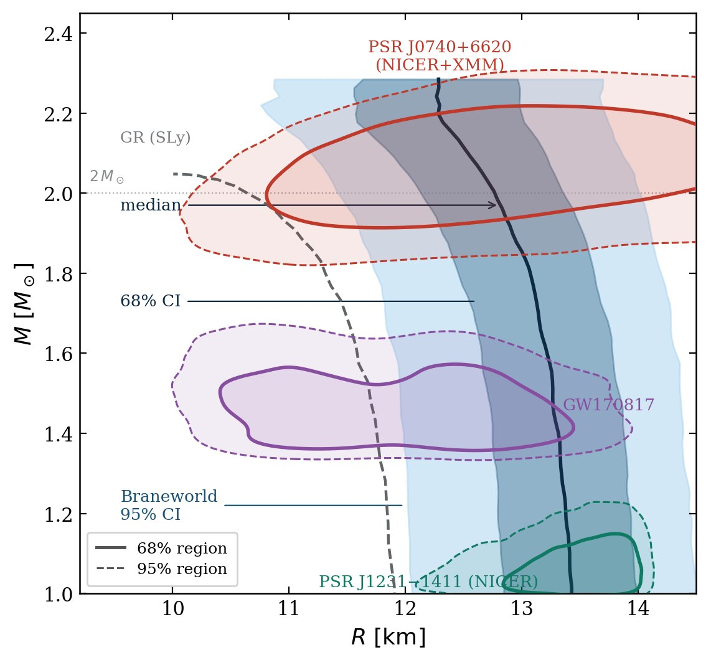
- λ ~ 10⁴ km⁻²: o termo local some (ρ/λ ~ 10⁻⁷). O posterior quase repete o prior: os dados são compatíveis com tensão alta, não medem λ.
- α𝒰 < 0 em 83% das amostras: uma blindagem leve. É o setor de Weyl, e não o termo local, que empurra a curva para a direita.
- Um ramo secundário (17%): α𝒰 > 0 com w𝒰 < 0 se compensam — R1,4 menor, Mmáx maior, compacidade perto do limite imposto.
- Mmáx ≈ 2,3 M☉: compatível com PSR J0952−0607 (2,35 ± 0,11 M☉). GW190814 (2,50–2,67 M☉) só cabe na cauda de 95%.
- O recado: estrelas mais pesadas não são uma previsão genérica do braneworld — dependem do sinal do setor de Weyl.
Itoh 1970 · Bodmer 1971 · Witten 1984 · a hipótese da matéria estranha
E se o ferro não for o fundo do poço?
Em densidades extremas os nêutrons podem se desfazer em quarks. A hipótese de Bodmer e Witten vai além: a matéria de quarks u, d e s seria o estado fundamental da matéria — com energia por bárion menor que a do ⁵⁶Fe, 930 MeV.
Pauli: cada sabor tem o seu mar de Fermi. Um terceiro sabor abre níveis novos, e o topo (μ) desce — mesmo pagando a massa do s.
- Os núcleos não decaem porque precisariam de ~A conversões fracas d → s simultâneas.
- E a matéria só de u e d precisa ser instável — senão o próprio ferro já teria virado quarks.
- Se valer, “estrelas de nêutrons” podem ser estrelas de quarks, presas pela interação forte.
Alford, Braby, Paris & Reddy 2005 · uma equação de estado informada pela QCD
A QCD densa em três números
| a4 = 1 − c | a interação forte. a4 = 1 são quarks livres; a QCD perturbativa sugere c ≳ 0,3 |
| a2 = ms² − 4Δ² | a massa do quark s contra o gap Δ da supercondutividade de cor (fase CFL) — pode ser negativo |
| B | a constante de sacola: o custo de abrir o vácuo da QCD |
Na superfície p = 0, mas a densidade não: ρs ≈ 4B ~ 10¹⁴–10¹⁵ g/cm³. A estrela é autoligada: em massas pequenas, M ∝ R³, ao contrário da estrela de nêutrons.
TOV + a equação de maré com o salto da superfície (Δy = −4πR³ρs/M), resolvidas aqui. O exemplo do artigo dá 2,19 M☉, 11,97 km e Λ = 852 — o painel reproduz.
Zastrow, Pereira, de Lima & Horvath · PRD 112, 083010 (2025) · o método
Milhares de estrelas sorteadas
Cada ponto (a2, a4, B) dentro da janela de estabilidade é uma família inteira de estrelas: TOV para M e R, a equação de maré para Λ. O artigo sorteou 263 287 pontos por hipercubo latino; aqui o navegador sorteia os seus, ao vivo.
| faixa aceita | de onde vem | |
|---|---|---|
| Mmáx | 2,13 – 2,33 M☉ | pulsares em binárias (Romani et al. 2022) · GW170817 + GRB 170817A (Rezzolla et al. 2018) |
| R1,4 | 10,00 – 13,25 km | raios do NICER — ray tracing — e de ondas gravitacionais (compilação de Pang et al. 2023) |
| Λ1,4 | < 970 | deformabilidade de maré de GW170817 |
Âmbar: as famílias que passam nos três testes. As linhas tracejadas mostram até onde vão os aceitos — e convergem para os limites do artigo.
Zastrow, Pereira, de Lima & Horvath · PRD 112, 083010 (2025) · resultados
Quarks que interagem, superfície densa
| vínculos combinados | faixa |
|---|---|
| a4 | 0,18 – 0,81 |
| a2 (10³ MeV²) | −202 – 42 |
| B1/4 (MeV) | 114 – 185 |
| R1,4 (km) | 10,00 – 12,26 |
| Λ1,4 | 270 – 970 |
| ρsuperfície (10¹⁵ g/cm³) | 0,29 – 0,60 |
| cs/c | 0,51 – 0,85 |
A velocidade do som passa de c/√3 ≈ 0,58 — o limite conforme da QCD em densidade infinita — quando a2 < 0.
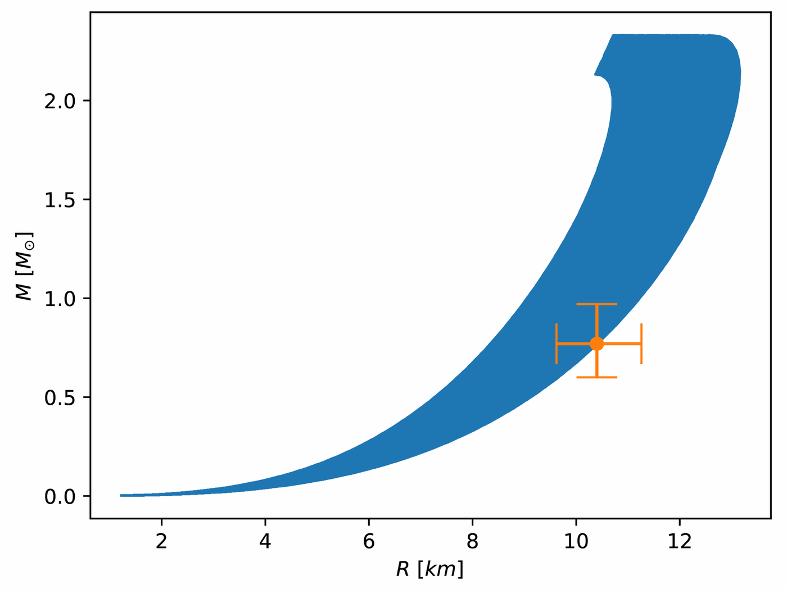
- a4 ≲ 0,81: a matéria se afasta pelo menos 20% dos quarks livres. As interações fortes não podem ser desprezadas, em nenhuma massa.
- Δ ≲ 230 MeV (com ms = 100 MeV), do limite inferior de a2 — de acordo com o limite independente de ≲ 216 MeV (Kurkela et al. 2024).
- A superfície salta do vácuo para 1,1–2,2 ρsat: um número que entra na maré, nos modos de oscilação e nas montanhas da estrela.
- R1,4 = 10,0–12,3 km, como uma estrela de nêutrons: o raio sozinho não distingue as duas; a maré pode.
- XMMU J1732−344 (0,77 M☉, 10,4 km, em HESS J1731−347) cai nas curvas sem esforço — uma candidata a estrela de quarks, se o modelo de atmosfera do raio estiver certo.
Pereira, Ottoni, Coelho, Rueda & de Lima · PRD 110, 103014 (2024)
Quando o núcleo e a crosta não giram juntos
Quase todo cálculo trata o pulsar como um corpo rígido. Mas o interior pode ser superfluido, ter uma transição de fase — um caroço de quarks — ou ganhar camadas acretadas que giram diferente, como na tacoclina do Sol.
O J vem da derivada de ω̄ na superfície, e por isso sente o salto: a mesma estrela, com o mesmo Ω⁺, tem outro momento de inércia.
Pereira, Ottoni, Coelho, Rueda & de Lima · PRD 110, 103014 (2024) · resultados
Rotação rígida é uma hipótese — e tem custo
- Perto da superfície, ΔI/I → ΔΩ/Ω⁺; abaixo de ~40% do raio, o efeito some. Cresce depressa para R★ ≳ 0,6 R, e mais nas estrelas leves.
- Estrelas híbridas: o salto fica na transição para o caroço de quarks, e só passa de 5% com 𝒞 ~ 20% e R★ ≳ 0,8 R (figura).
- No raio: com a massa conhecida, ΔR/R = ½ ΔI/I. Dez por cento em I são 5% em R — o tamanho das barras do NICER, que vêm de ray tracing.
- Medida direta de I: o pulsar duplo J0737−3039A deve dar I com 11% até 2030 (hoje, I45 = 1,15–1,48). Saltos de 10–20% em Ω não se distinguem da rotação rígida.
- Energia: com I 10–20% maior, cinco pulsares de raios gama do Fermi com Lγ > Ė voltam a caber na energia de rotação.
- I-Love-Q: o quadrupolo depende de outra função além de J — as relações universais enfraquecem. E nos CCOs, camadas acretadas podem girar diferente por até ~10 mil anos.
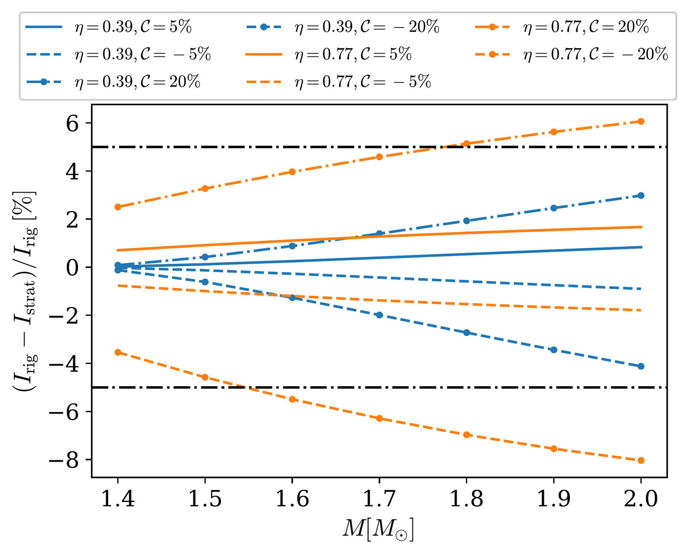
| pulsar (Fermi) | Lγ/Ė, I0 | +10% | +20% |
|---|---|---|---|
| J1057−5851 | 1,19 | > 1 | 0,99 |
| J1522−5735 | 1,09 | 0,99 | 0,91 |
| J1650−4601 | 1,11 | > 1 | 0,92 |
Conclusões
Da geometria à observação — e de volta
- Numa estrela de nêutrons, desvio da luz, redshift e atrasos não são correções: definem a imagem e a curva de luz.
- O ray tracing de trás para a frente — com a integral exata quando a compacidade pede — liga a métrica ao que um telescópio mede.
- Aplicado a dados do Chandra, do XMM-Newton e do NuSTAR, deu massa, raio, campo e a geometria das manchas de magnetares e de uma estrela acretante — e, pelo espectro, a temperatura e a altura da sua coluna.
- Como a curva de luz depende só da métrica exterior, ela também testa a gravidade: teorias escalar-tensoriais e braneworld.
- E o interior conta: estrelas de quarks e rotação estratificada mudam o M, o R e o I que o ray tracing mede.
Próximos passos
- Atmosferas magnetizadas e ray tracing exato juntos, para as estrelas isoladas que esfriam.
- Rotação rápida e métricas além de Schwarzschild nos mesmos ajustes.
- Os dados da próxima geração: eXTP, NewAthena, STROBE-X.
Os painéis deste seminário rodam no navegador: rafael-lima.pages.dev/talks.
Créditos das imagens
Fotos e figuras de uso livre
Albert Einstein — Ferdinand Schmutzer / Adam Cuerden · domínio público

Karl Schwarzschild — autor desconhecido · domínio público

M87* (EHT) — Event Horizon Telescope Collaboration · CC BY 4.0

Sgr A* (EHT) — EHT Collaboration · CC BY 4.0

Jocelyn Bell, 1967 — Roger W Haworth · CC BY-SA 2.0
,_1967.jpg){kind=link}
Antony Hewish — Woodruff T. Sullivan III / NRAO/AUI Archives (NRAO/AUI/NSF) · CC BY 4.0

Registro de CP 1919, 1967 — Bill Thompson (Billthom) · CC BY-SA 4.0

Estrela de nêutrons sobre Manhattan — NASA's Goddard Space Flight Center · domínio público
Eclipse de 1919 — ESO/Landessternwarte Heidelberg-Königstuhl/F. W. Dyson, A. S. Eddington, & C. Davidson · CC BY 4.0

SMACS 0723 (JWST) — NASA, ESA, CSA, and STScI · domínio público

NICER — NASA · domínio público

XMM-Newton — ESA/XMM-Newton · CC BY-SA 3.0 IGO

Chandra — NASA/CXC/NGST · domínio público

Pulsar (ilustração) — NASA · domínio público

Magnetar (ilustração) — ESO/L. Calçada · CC BY 4.0

Carl Brans — Cfbolner · CC BY-SA 4.0

Thibault Damour — Melirius · CC BY 3.0

PSR J0030+0451: modelos das manchas — NASA's Goddard Space Flight Center · domínio público
Figuras dos artigos (Parte III) — de Lima et al., ApJ 889, 165 (2020); de Lima et al., JHEAp 42, 52 (2024, CC BY 4.0 no arXiv); Silva et al., Galaxies 11, 18 (2023, CC BY 4.0); Ottoni et al., EPJC 84, 1337 (2024, CC BY 4.0); dos Santos Júnior, de Lima & Moraes, arXiv:2607.09836 (CC0); Pereira et al., PRD 110, 103014 (2024); Zastrow et al., PRD 112, 083010 (2025); Silva, de Lima, Coelho & de Araújo (submetido ao JHEAp, 2026)
Chapa simulada de Sobral — posições do catálogo Tycho-2 (Høg et al., A&A 355, L27, 2000), via VizieR/CDS
Binária Be/X (ilustração) — gerada por IA
Diagrama P–Ṗ — catálogo de pulsares ATNF 2.8.1 (Manchester et al., AJ 129, 1993, 2005)
Obrigado
Perguntas?
Slides, animações e dashboards abertos em rafael-lima.pages.dev/talks